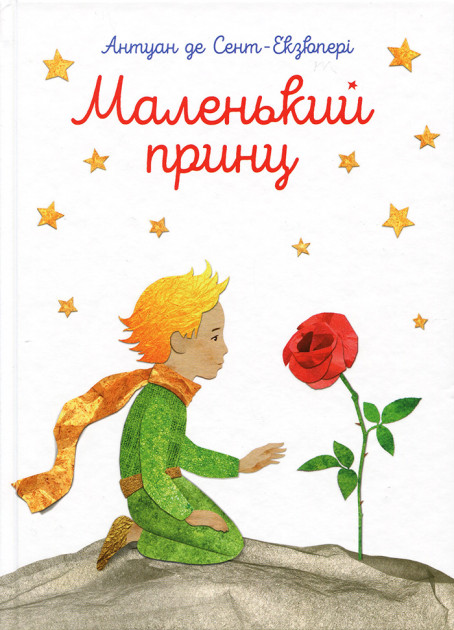

Маленький принц
Автор:
Антуан де Сент-ЭкзюпериГод:
1943Жанр:
любовь, философский, романтикаОписание:
Эта очень необычная сказка о приключениях маленького мальчика, оказавшегося на планете Земля по воле случая.
Герой сказки Маленький принц, так его звали, на самом деле прибыл на нашу планету с далекой галактики. Его родная планета была крошечной и совершенно безлюдной. Все, что было у этого златовласого малютки это роскошная роза, которую он вырастил и приручил, словно прелестное и живое создание. Но она показалась ему надменной и не нуждающейся в его услугах. И потому принц отправился в дальнее путешествие по разным планетам...